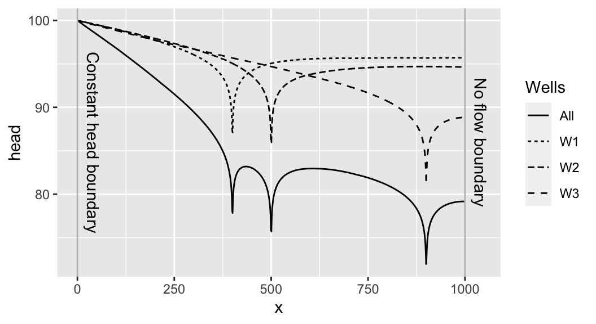
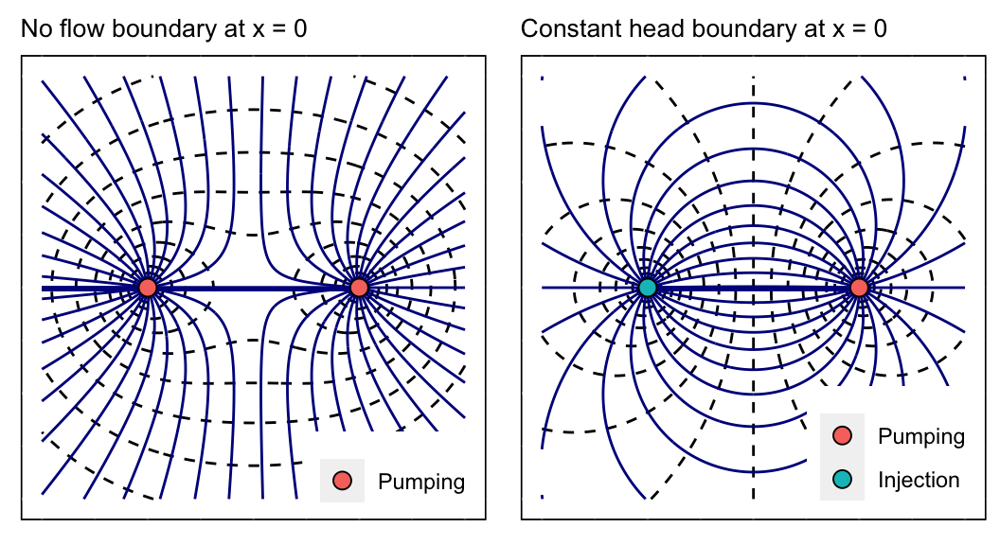
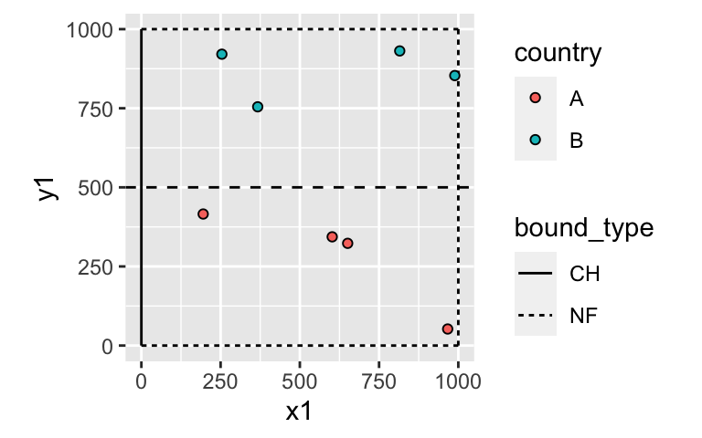
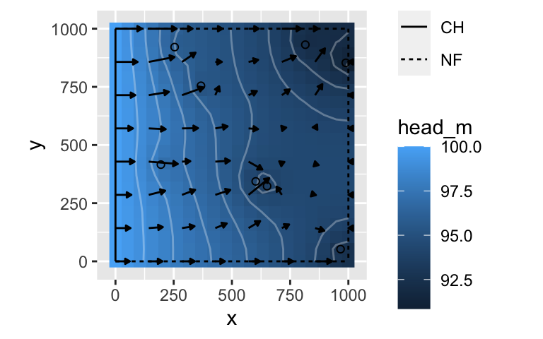
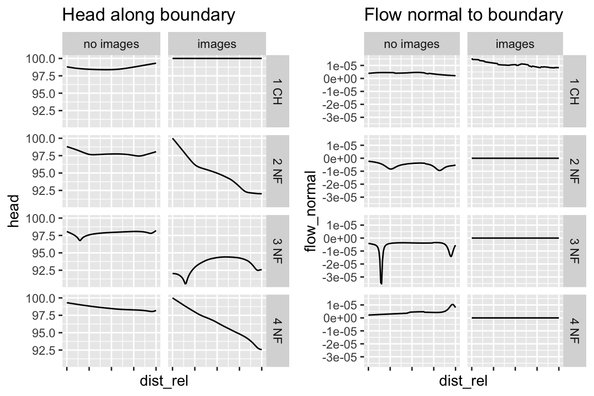
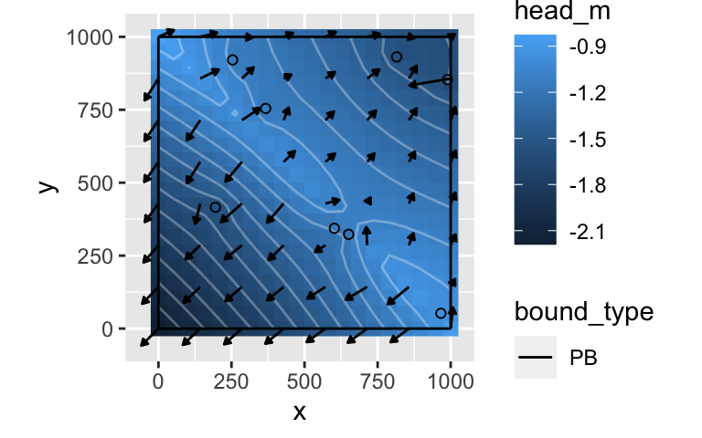
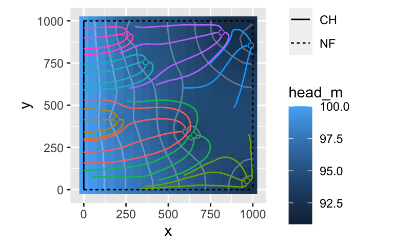

anem-vignette.RmdThis package was created to evaluate the hydraulic relationships among wells, in order to estimate the effect of a group of wells on drawdown at these wells or other wells. It it based on method of images from the analytical element modeling approach, in which the 2-dimensional characteristics of aquifers are reproduced by strategically placing wells within the domain.
This package models simple aquifer and well configurations. The boundaries of the aquifer can be specified as no flow or constant head boundaries, and the corners of the aquifer must be right angles. For fully bounded aquifers, this means that the aquifer must be a rectangle. The constant head boundaries take the head of the undisturbed aquifer, h0.
Units are designed for length dimensions given in meters (or m2), and time in seconds.
As you will see in this vignette, the package has a number of functions that are used to set up the aquifer boundaries and wells. For practical purposes, the package was designed for simple but real aquifers, and wells and boundaries of the aquifers can be imported as shapefiles and then prepared.
The package relies on the principle of superposition and the method of images to generate groundwater hydrodynamics, illustrated by the two figures below (see ? and ?, respectively, which give examples for generating similar plots). The principle of super position states that, because the groundwater equations are linear, the solution to the equations can be calculated as the sum of solutions. In the example below, the drawdown of the water table is calculated as the sum of drawdown due to three individual wells.

In the method of images, wells are mirrored across aquifer boundaries to reproduce characterics of the boundary, such as no flow or constant head. The following examples demonstrate (a) how a no-flow boundary is created by mirroring a well across the boundary, and (b) how a constant head boundary is recreated by mirroring the well and inverting the pumping.

Load packages for the vignette
library(ggplot2) library(sf) # devtools::install_github("https://github.com/gopalpenny/anem") library(anem)
Aquifers in this package are characterized by:
Use the define_aquifer() function to create a new aquifer, which has the class aquifer. This class is essentially a list with names parameters and a separate print method.
# define aquifer bounds_df <- data.frame(bound_type=c("CH","NF","NF","NF"),m=c(Inf,0,Inf,0),b=c(0,1000,1000,0)) aquifer_unconfined <- define_aquifer("unconfined",1e-3,bounds=bounds_df,h0=100,n=0.35) print(aquifer_unconfined) #> # aquifer_type: unconfined #> # Ksat: 0.001 #> # h0: 100 #> # n: 0.35 #> # bounds: #> # A tibble: 4 x 8 #> bID bound_type m b x1 y1 x2 y2 #> <int> <chr> <dbl> <dbl> <dbl> <dbl> <dbl> <dbl> #> 1 1 CH Inf 0 0 1000 0 0 #> 2 2 NF 0 1000 0 1000 1000 1000 #> 3 3 NF Inf 1000 1000 1000 1000 0 #> 4 4 NF 0 0 0 0 1000 0 #> # recharge (undisturbed water table): #> No recharge zones
Wells are characterized by:
well_image column)The code below Defines 8 pumping wells using random locations and arbitrarily divides wells into countries “A” and “B” using a threshold at y = 500 m. The define_wells() function ensures that the wells have all appropriate columns, and the class of the returned object is a tibble (which functions like a data.frame, but has a couple bells and whistles). Also note that the radius of influence (R) is defined arbitrarily, but there is also a function to calculate this manually – see ?get_ROI for more details.
The generate_image_wells() function generates well images to recreate the bounderies defined by the aquifer, aquifer_unconfined.
# define wells and well images set.seed(15) wells_actual <- define_wells(x = runif(8,0,1000), y = c(runif(4,0,500),runif(4,500,1000)), Q = -1/4, diam = 1, R = 1000, weights = 1, country = rep(c("A","B"),each=4)) wells <- wells_actual %>% generate_image_wells(aquifer_unconfined) print(wells) #> # A tibble: 68 x 11 #> wID Q R diam x y well_type well_image weights #> <dbl> <dbl> <dbl> <dbl> <dbl> <dbl> <fct> <chr> <dbl> #> 1 1 -0.25 1000 1 602. 344. Pumping Actual 1 #> 2 2 -0.25 1000 1 195. 416. Pumping Actual 1 #> 3 3 -0.25 1000 1 966. 52.3 Pumping Actual 1 #> 4 4 -0.25 1000 1 651. 323. Pumping Actual 1 #> 5 5 -0.25 1000 1 367. 755. Pumping Actual 1 #> 6 6 -0.25 1000 1 989. 853. Pumping Actual 1 #> 7 7 -0.25 1000 1 815. 931. Pumping Actual 1 #> 8 8 -0.25 1000 1 254. 921. Pumping Actual 1 #> 9 9 -0.25 1000 1 602. 1656. Pumping Image (+Q) 1 #> 10 10 -0.25 1000 1 602. -344. Pumping Image (+Q) 1 #> # … with 58 more rows, and 2 more variables: country <chr>, orig_wID <int>
Plot the aquifer and wells.
ggplot() + geom_segment(data=aquifer_unconfined$bounds,aes(x1,y1,xend=x2,yend=y2,linetype=bound_type)) + geom_abline(slope=0,intercept=500,linetype="dashed") + geom_point(data=wells_actual,aes(x,y,fill=country),shape=21) + coord_equal()

Get drawdown relationships using get_drawdown_relationships(). This function calculates the average drawdown at wells in each group defined by the column group_column. The average is taken as the weighted mean, determined by the weights_column. The weights were previously set equal for all wells so that the result here is a simple mean. The results show PHIii and PHIij.
drawdown_relationships <- get_drawdown_relationships(wells, aquifer_unconfined, group_column=country, weights_column=weights) drawdown_relationships
| var | pot | units | description |
|---|---|---|---|
| PHI_A_A | 1199.6188 | [m^2/cumec] | Weighted effect of pumping [cumec] in group A on discharge potential [m^2] in group A |
| PHI_A_B | 189.2822 | [m^2/cumec] | Weighted effect of pumping [cumec] in group B on discharge potential [m^2] in group A |
| PHI_B_A | 189.2822 | [m^2/cumec] | Weighted effect of pumping [cumec] in group A on discharge potential [m^2] in group B |
| PHI_B_B | 1342.9247 | [m^2/cumec] | Weighted effect of pumping [cumec] in group B on discharge potential [m^2] in group B |
The hydrodynamics of the aquifer can be mapped by obtaining gridded heand flow using the get_gridded_hydrodynamics() function. The function takes as input the wells, aquifer, and grid dimensions for head and flow. It returns a list object with data.frames for head and flow, which can then be plotted.
gridded_1 <- get_gridded_hydrodynamics(wells,aquifer_unconfined,c(20,20),c(8,8)) ggplot() + geom_raster(data=gridded_1$head,aes(x,y,fill=head_m)) + geom_contour(data=gridded_1$head,aes(x,y,z=head_m),color="white",alpha=0.3) + geom_segment(data=gridded_1$flow,aes(x,y,xend=x2,yend=y2), arrow = arrow(ends="last",type="closed",length=unit(1,"mm")),color="black") + geom_segment(data=aquifer_unconfined$bounds,aes(x1,y1,xend=x2,yend=y2,linetype=bound_type)) + geom_point(data=wells %>% dplyr::filter(wID==orig_wID),aes(x,y),shape=21) + coord_equal() #> Warning: Removed 2 rows containing missing values (geom_segment).

The function get_bounds_behavior() is a helper function to generate hydraulic properties at the boundaries. It obtains hydraulic head and the flow normal to the boundaries by setting boundaries to segments and using get_segments_behavior(). Normal flow is defined such that positive flow has some component in the x-direction (the y-direction depends on the normal vector for the boundary). The function plot_bounds_behavior() is a wrapper around get_bounds_behavior(), and it can be used to quickly compare the hydraulic head along the boundaries and flow across the boundaries under two scenarios:
bounds_behavior <- plot_bounds_behavior(wells,aquifer_unconfined) gridExtra::grid.arrange(bounds_behavior$p_h,bounds_behavior$p_f,nrow=1)

Finally, the function plot_bounds_behavior also includes the raw data of head and flow used to create the above plots (bounds_behavior$bounds_behavior), as well as a summary of these values which includes mean head on each of the boundaries and mean flow as the mean of the absolute value of flow normal to each boundary (bounds_behavior$table). To numerically check that the boundaries are working as expected, we can print bounds_behavior$table:
| bound | Mean flow, images | Mean flow, no images | Mean head, images | Mean head, no images |
|---|---|---|---|---|
| 1 CH | 1.07e-05 | 3.9e-06 | 100.00000 | 98.64171 |
| 2 NF | 0.00e+00 | 5.4e-06 | 95.01699 | 97.82476 |
| 3 NF | 0.00e+00 | 5.7e-06 | 93.32580 | 97.81516 |
| 4 NF | 0.00e+00 | 4.2e-06 | 96.37611 | 98.55836 |
Background flow is parameterized by defining “recharge” in the aquifer. Recharge can be defined as a constant flow (F) or a recharge divide (D). In both cases, flow is defined as m3 / m-s, in the direction of the recharge vector. Recharge is therefore defined by specifying:
See ?define_recharge for more details.
# Define recharge for type "D" recharge_params <- list(recharge_type="D",recharge_vector=c(500,500,501,501), flow_main=1e-3,flow_opp=2e-3,x0=0,y0=0) # Define bounds as "PB" -- pervious bounds, which have no effect (other than to define output grid) bounds_recharge <- define_bounds(data.frame(bound_type=rep("PB",4),m=c(Inf,0,Inf,0),b=c(0,0,1000,1000))) aquifer_recharge <- define_aquifer("confined",1,h0=0,z0=1,n=0.35,recharge=recharge_params,bounds=bounds_recharge) gridded_2 <- get_gridded_hydrodynamics(wells_actual,aquifer_recharge,c(20,20),c(8,8))
The results can then be plotted, just as above:

The package implements particle tracking in two ways: (1) tracking individual particles using track_particles and (2) estimating capture zones of wells using get_capture_zone, which initializes particles in the vicinity of wells and tracks them in reverse. Here we use get_capture_zone on the previous aquifer to generate particle tracking away from wells.
# wells <- wells # wells[4,"Q"] <- 0.25 well_particles <- get_capture_zone(wells,aquifer_unconfined,t_max=365,n_particles=4)
gridded_3 <- get_gridded_hydrodynamics(wells,aquifer_unconfined) ggplot() + geom_raster(data=gridded_1$head,aes(x,y,fill=head_m)) + geom_contour(data=gridded_1$head,aes(x,y,z=head_m),color="white",alpha=0.3) + # geom_segment(data=gridded_1$flow,aes(x,y,xend=x2,yend=y2), # arrow = arrow(ends="last",type="closed",length=unit(1,"mm")),color="black") + geom_segment(data=aquifer_unconfined$bounds,aes(x1,y1,xend=x2,yend=y2,linetype=bound_type)) + geom_path(data=well_particles,aes(x,y,group=i,color=as.factor(wID)),show.legend = FALSE) + geom_point(data=wells_actual,aes(x,y,color=as.factor(wID)),shape=21,show.legend = FALSE) + coord_equal()

The basic functionality of this package is implemented online in a Shiny application, anem-app. The Shiny application provides an GUI for setting aquifer properties, drawing boundaries, defining recharge, adding wells, and tracking particles. It also displays results directly in the app. You can also download scenarios created on anem-app and import them into R. To do so, check out ?import_app_rds from this package to learn more.